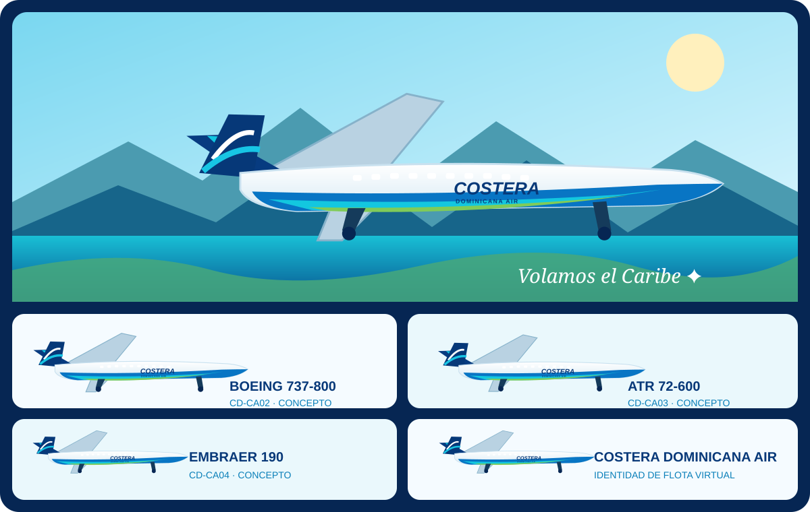

NUESTRO HORIZONTECaribe
UNA AEROLÍNEA VIRTUAL DEL GRUPO NORJET
Tu destino,
nuestra costa.
Conectando la República Dominicana con el mundo, al estilo del Caribe.
SIMULACIÓN AÉREA · PASIÓN REAL
VOLAMOS EL CARIBE ✦
SOBRE NOSOTROS
El Caribe nos inspira.
Costera Dominicana Air Virtual nace de la pasión por volar y de la belleza de la República Dominicana. Somos parte del Grupo Norjet y compartimos una misma ilusión: conectar personas, destinos y experiencias a través de la simulación aérea.
Volamos con profesionalidad, espíritu aventurero y orgullo caribeño. Cada ruta es una nueva historia por descubrir.
Descubre el Grupo Norjet →NUESTRA FLOTAPasión por
Pasión por
volar
NUESTRA ESENCIARepública
República
Dominicana
RUTAS QUE INSPIRAN
El mundo, desde el Caribe.
Explora con nosotros destinos llenos de cultura, costa y nuevas aventuras virtuales.
Santo Domingo
La puerta de entrada a nuestra historia.
San Juan
Color, música y horizonte atlántico.
Más destinos por descubrir
Nuestra red virtual crecerá contigo.
Los destinos y servicios se presentan con fines de simulación aérea. Las rutas están sujetas a la planificación virtual de la compañía.
NUESTRA FLOTA VIRTUAL
Una librea, mil horizontes.
Azul océano, olas turquesas y el orgullo dominicano: una identidad común para nuestra flota virtual. Estas aeronaves forman parte del concepto visual y podrán ajustarse a los modelos disponibles en la simulación.

✈
Regional de cuatro motores
Avión protagonista de la imagen de referencia. Silueta inspirada en la familia BAe 146 / Avro RJ; modelo pendiente de confirmar.
CONCEPTO DE FLOTA✈
Boeing 737-800
Para conexiones caribeñas y rutas de media distancia en la red virtual.
CONCEPTO DE FLOTA✈
ATR 72-600
Una opción regional para enlazar islas y destinos cercanos.
CONCEPTO DE FLOTA✈
Embraer 190
Versatilidad para rutas de demanda intermedia y operaciones flexibles.
CONCEPTO DE FLOTALas matrículas CD-CA01 a CD-CA04 son identificadores virtuales ilustrativos. Los modelos y la composición final se confirmarán según la flota que utilices en tu simulador.
MÁS QUE VOLAR
El auténtico estilo caribeño.
Una comunidad virtual construida alrededor de la aviación, el compañerismo y el placer de descubrir nuevos cielos.
Vuela con nosotros →N✦
UNA FAMILIA, MUCHOS HORIZONTES
Parte del Grupo Norjet.
Costera Dominicana Air Virtual comparte familia con Norjet Skyways. Dos identidades, una misma pasión por la aviación virtual.
Visitar Norjet Skyways ↗TU PRÓXIMA AVENTURA EMPIEZA AQUÍ
¿Listo para volar?
Pronto compartiremos novedades sobre la tripulación y las operaciones virtuales.